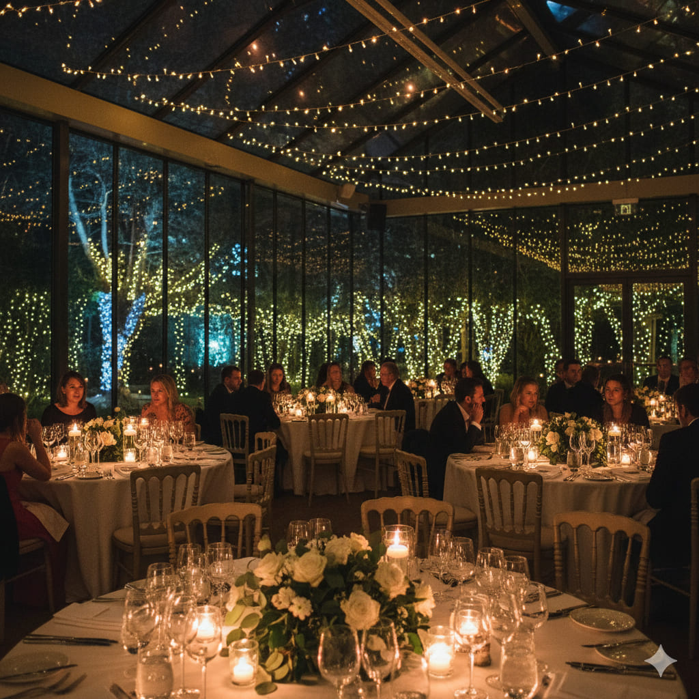
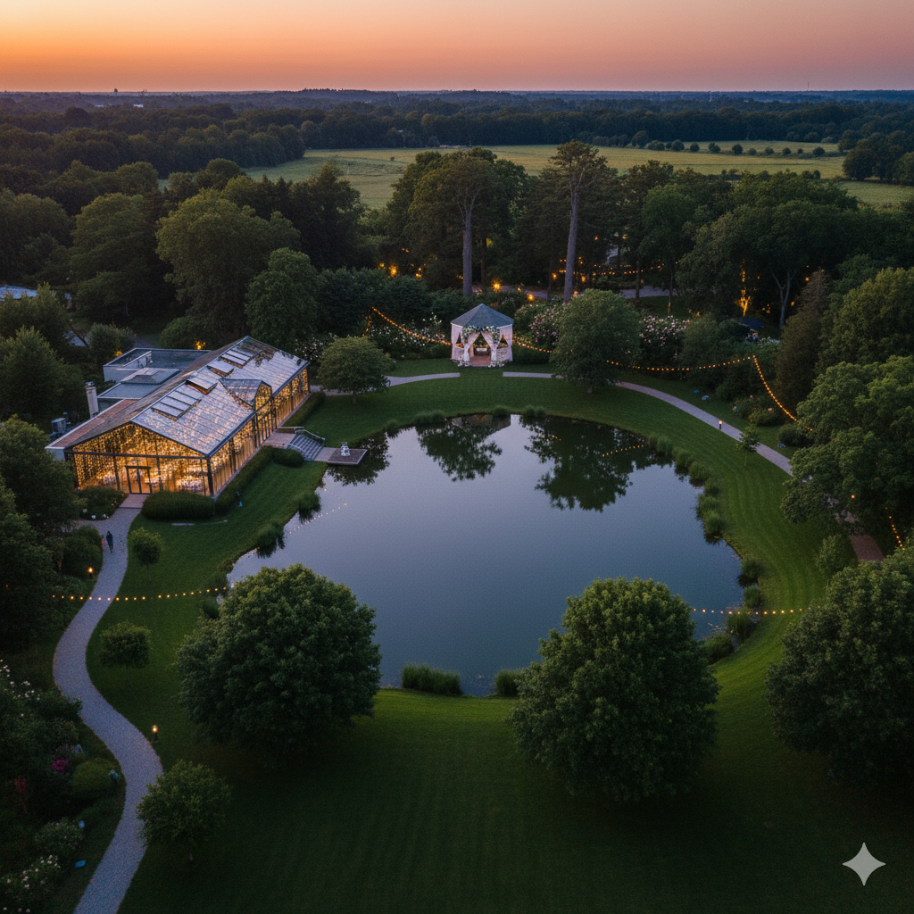

Espaços
Espaço Jardim Encantado
Piracicaba, SP
Sobre o Espaço
O Jardim Encantado é o cenário perfeito para casais que sonham com um casamento ao ar livre, rodeado pela natureza. O nosso espaço conta com um vasto jardim com paisagismo exuberante, um coreto para cerimónias e um lago sereno, proporcionando um ambiente romântico e inesquecível.
Além da área externa, oferecemos um salão coberto com estrutura de vidro, que se integra perfeitamente à paisagem, garantindo conforto aos convidados em qualquer estação do ano. Dispomos de cozinha industrial para o buffet e suites de apoio para os noivos.
Galeria de Fotos


